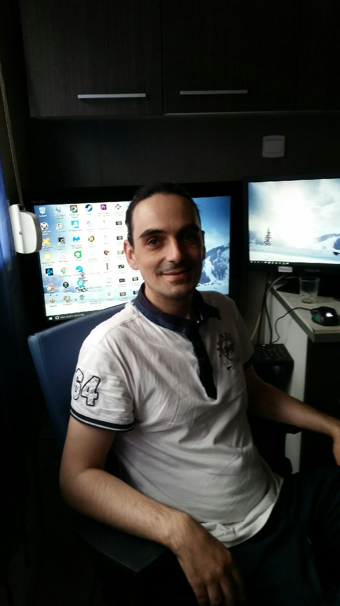

Développeur Web et web mobile
BOURET
Sébastien
5bis, rue George
59132 GLAGEON
tél : 06.36.90.50.33
mail :
seb-bastos16@live.fr
linkedin :

experiences professionnelles
+
96: Ramassage transformation de fruit "Passiflores ST JOSEPH La Réunion"
98/05: tout poste en GMS sauf PDG/directeur "E.LECLERC COGNAC"
05/09: responsable d'affichage "PAPI COGNAC"
Formations
+
2000: BTS Action Co.
2001: formation"sommelier/oenologue"Scashap Ruffec"
2003: diplome niv:II de: chef de rayon "E.LECLEC + C.C.I."
2018: foramtion web dev./web mobile
Compétences
+
travail d'équipe
manager une équipe
bases et notions "HTML5/CSS3/JavaScript/Boostrap/GitHub